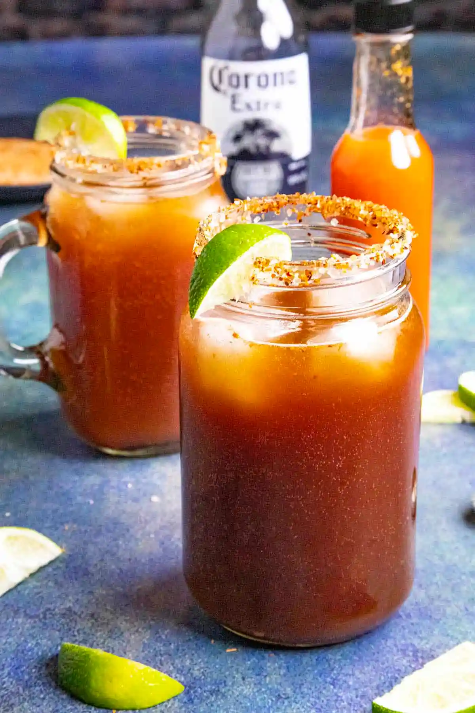

Michelada

How to make a Michelada
Try this refreshing Michelada recipe, a classic Mexican cocktail made with beer, Clamato juice, lime juice, Worcestershire sauce, soy sauce, hot sauce and more. I like mine spicy!
Ingredients
- 1 mexican beer (can or bottle)
- 12 ounces Clamato juice
- 1/4 cup freshly squeezed lime juice
- 1 tbsps Worcestershire sauce
- 1 tbsps soy sauce
- 2 tsp hot sauce
- Ice
- Tajin sesoning
- Salt
Instructions
- Place enough salt and Tajin seasoning or chili powder in a wide, shallow dish to cover the bottom.
- Rub the rims of two glasses with the lime wedges (or use the reserved lime rinds) and dip them into the spicy salt mixture.
- Fill the glasses with ice and set aside.
- Divide the Worcestershire sauce, soy sauce hot sauce, lime juice, beer and Clamato juice into each glass. Mix well.
- Garnish with a lime wedge
- Enjoy!